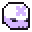

Objetos 
Personajes
Aparición
El druida aparece temprano una vez que se descubre la isla Tree House. Siempre lo encontrarás frente al árbol.
Misiones
Tras el primer contacto, durante la noche, la Reina de las Hadas ofrece una misión que promete el poder de las hadas a cambio de donaciones. Específicamente 1000 de oro, aunque el contador parece aumentar a medida que se recolecta oro, sin necesidad de ser donado físicamente.Recompensa: Accesorio llamado Fairy Aura, que proporciona salud pasiva y regeneración de energía.
Aparición
Ella comienza a aparecer al principio del juego, una vez que se descubre la isla de las hadas. Aparece sobre la fuente durante la noche, generalmente acompañada de 1 a 3 hadas.
Misiones
Tras el primer contacto, durante la noche, la Reina de las Hadas ofrece una misión que promete el poder de las hadas a cambio de donaciones. Específicamente 1000 de oro, aunque el contador parece aumentar a medida que se recolecta oro, sin necesidad de ser donado físicamente.Recompensa: Accesorio llamado Fairy Aura, que proporciona salud pasiva y regeneración de energía.

Sauron (Señor oscuro)

Celebrimbor (Señor de la luz)

Los Nazgul
 WEAPONS
WEAPONS